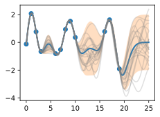
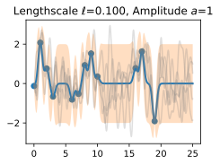
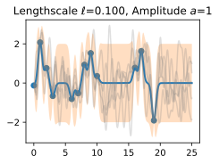
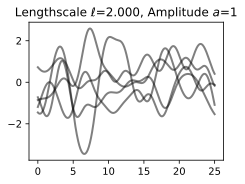
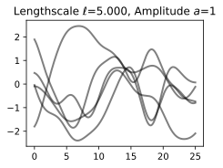
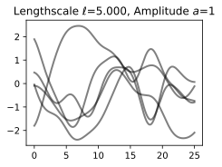

Introduction to Gaussian Processes 1
- Gaussian processes provide a mechanism for directly reasoning about the high-level properties of functions that could fit our data.
. . .
- may have a sense of whether these functions are quickly varying, periodic, involve conditional independencies, or translation invariance.
. . .
- Gaussian processes: easily incorporate these properties into our model, by directly specifying a Gaussian distribution over the function values that could fit our data.
Introduction to Gaussian Processes 2
Suppose we observe the following dataset, of regression targets (outputs), \(y\), indexed by inputs, \(x\).

example: targets could be changes in carbon dioxide concentrations, inputs could be the times at which these targets have been recorded
. . .
- What are some features of the data? How quickly does it seem to varying? Do we have data points collected at regular intervals, or are there missing inputs? How would you imagine filling in the missing regions, or forecasting up until \(x=25\)?
Introduction to Gaussian Processes 3
- start by specifying a prior distribution over what types of functions we might believe to be reasonable.
. . .
- show several sample functions from a Gaussian process. Does this prior look reasonable? we are not looking for functions that fit our dataset, but instead for specifying reasonable high-level properties of the solutions, such as how quickly they vary with inputs. Note that we will see code for reproducing all of the plots in this notebook, in the next notebooks on priors and inference.

Introduction to Gaussian Processes 3.5

Introduction to Gaussian Processes 4
Once we condition on data, we can use this prior to infer a posterior distribution over functions that could fit the data. Here we show sample posterior functions.

. . .
- each of these functions are entirely consistent with our data, perfectly running through each observation.
. . .
- In order to use these posterior samples to make predictions, we can average the values of every possible sample function from the posterior, to create the curve below, in thick blue.
. . .
- Note that we do not actually have to take an infinite number of samples to compute this expectation; as we will see later, we can compute the expectation in closed form.
Introduction to Gaussian Processes 5

may also want a representation of uncertainty, so we know how confident we should be in our predictions.
Intuitively: more variability in the sample posterior functions –> more uncertainty
epistemic uncertainty, which is the reducible uncertainty associated with lack of information.
acquire more data –> this type of uncertainty disappears, as there will be increasingly fewer solutions consistent with what we observe.
Like with the posterior mean, we can compute the posterior variance (the variability of these functions in the posterior) in closed form.
Introduction to Gaussian Processes 6

- shade: two times the posterior standard deviation on either side of the mean, creating a credible interval that has a 95% probability of containing the true value of the function for any input \(x\).
- plot looks somewhat cleaner if we remove the posterior samples, simply visualizing the data, posterior mean, and 95% credible set.
- Notice how the uncertainty grows away from the data, a property of epistemic uncertainty.
Introduction to Gaussian Processes 7

properties of the Gaussian process that we used to fit the data are strongly controlled by what’s called a covariance function, also known as a kernel.
covariance function we used is called the RBF (Radial Basis Function) kernel, which has the form \[ k_{\text{RBF}}(x,x') = \mathrm{Cov}(f(x),f(x')) = a^2 \exp\left(-\frac{1}{2\ell^2}\|x-x'\|^2\right) \]
The hyperparameters of this kernel are interpretable. The amplitude parameter \(a\) controls the vertical scale over which the function is varying, and the length-scale parameter \(\ell\) controls the rate of variation (the wiggliness) of the function.
Larger \(a\) means larger function values, and larger \(\ell\) means more slowly varying functions. Let’s see what happens to our sample prior and posterior functions as we vary \(a\) and \(\ell\).
Introduction to Gaussian Processes 8
\[ k_{\text{RBF}}(x,x') = \mathrm{Cov}(f(x),f(x')) = a^2 \exp\left(-\frac{1}{2\ell^2}\|x-x'\|^2\right) \]
The length-scale has a particularly pronounced effect on the predictions and uncertainty of a GP. At \(\|x-x'\| = \ell\) , the covariance between a pair of function values is \(a^2\exp(-0.5)\).
At larger distances than \(\ell\) , the values of the function values becomes nearly uncorrelated. This means that if we want to make a prediction at a point \(x_*\), then function values with inputs \(x\) such that \(\|x-x'\|>\ell\) will not have a strong effect on our predictions.
Introduction to Gaussian Processes 9
- how changing the lengthscale affects sample prior and posterior functions, and credible sets. The above fits use a length-scale of \(2\). Let’s now consider \(\ell = 0.1, 0.5, 2, 5, 10\) .
 
 
- A length-scale of \(0.1\) is very small relative to the range of the input domain we are considering, \(25\). For example, the values of the function at \(x=5\) and \(x=10\) will have essentially no correlation at such a length-scale.
- On the other hand, for a length-scale of \(10\), the function values at these inputs will be highly correlated.
- Note that the vertical scale changes in the following figures.
Introduction to Gaussian Processes 10
  
 
- length-scale of \(0.1\) is very small relative to the range of the input domain we are considering, \(25\).
- For example, the values of the function at \(x=5\) and \(x=10\) will have essentially no correlation at such a length-scale.
- On the other hand, for a length-scale of \(10\), the function values at these inputs will be highly correlated.
- Note that the vertical scale changes in the following figures.
- as the length-scale increases the ‘wiggliness’ of the functions decrease, and our uncertainty decreases.
- If the length-scale is small, the uncertainty will quickly increase as we move away from the data, as the datapoints become less informative about the function values.
Introduction to Gaussian Processes 11


- now vary the amplitude parameter, holding the length-scale fixed at \(2\).
- Note the vertical scale is held fixed for the prior samples, and varies for the posterior samples, so you can clearly see both the increasing scale of the function, and the fits to the data.
Introduction to Gaussian Processes 12
\[ k_{\text{RBF}}(x,x') = \mathrm{Cov}(f(x),f(x')) = a^2 \exp\left(-\frac{1}{2\ell^2}\|x-x'\|^2\right) \]
. . .
amplitude parameter affects the scale of the function, but not the rate of variation. . . .
generalization performance of our procedure will depend on having reasonable values for these hyperparameters. . . .
Values of \(\ell=2\) and \(a=1\) appeared to provide reasonable fits, while some of the other values did not.
. . .
- Fortunately, there is a robust and automatic way to specify these hyperparameters, using what is called the marginal likelihood, which we will return to in the notebook on inference.
Interactive Visualization
So what is a GP, really?
- GP: any collection of function values \(f(x_1),\dots,f(x_n)\), indexed by any collection of inputs \(x_1,\dots,x_n\) has a joint multivariate Gaussian distribution.
. . .
mean vector \(\boldsymbol{\mu}\) of this distribution is given by a mean function, which is typically taken to be a constant or zero.
covariance matrix of this distribution is given by the kernel evaluated at all pairs of the inputs \(x\).
. . .
\[\begin{bmatrix}f(x) \\f(x_1) \\ \vdots \\ f(x_n) \end{bmatrix}\sim \mathcal{N}\left(\boldsymbol{\mu}, \begin{bmatrix}k(x,x) & k(x, x_1) & \dots & k(x,x_n) \\ k(x_1,x) & k(x_1,x_1) & \dots & k(x_1,x_n) \\ \vdots & \vdots & \ddots & \vdots \\ k(x_n,x) & k(x_n,x_1) & \dots & k(x_n,x_n) \end{bmatrix}\right)\]
Equation
(1)specifies a GP prior. We can compute the conditional distribution of \(f(x)\) for any \(x\) given \(f(x_1), \dots, f(x_n)\), the function values we have observed.
. . .
- This conditional distribution is also Gaussian, with mean \(m\) and variance \(s^2\):
\[f(x) | f(x_1), \dots, f(x_n) \sim \mathcal{N}(m,s^2)\]
- where \(m\) and \(s^2\) are functions of \(x\) and the observed function values.
- if we want to create an interval with a 95% probability that \(f(x)\) is in the interval, we would use \(m \pm 2s\).
. . .
- This is the essence of Gaussian process inference: we specify a prior over functions, and then we condition on observed function values to get a posterior over functions.
A Simple Example
- suppose we observe a single datapoint, \(f(x_1)\), and we want to determine the value of \(f(x)\) at some \(x\).
- \(f(x)\) described by Gaussian process –> joint distribution over \((f(x), f(x_1))\) is Gaussian:
\[\begin{bmatrix} f(x) \\ f(x_1) \end{bmatrix} \sim \mathcal{N}\left(\begin{bmatrix} 0 \\ 0 \end{bmatrix}, \begin{bmatrix} k(x,x) & k(x,x_1) \\ k(x_1,x) & k(x_1,x_1) \end{bmatrix}\right)\]
- The covariance \(k(x,x_1)\) tells us how correlated the function values will be — how strongly determined \(f(x)\) is by \(f(x_1)\).
. . .
- visualize the process of determining \(f(x)\) from \(f(x_1)\) both in the space of functions, and in the joint distribution over \(f(x_1), f(x)\).
- initially consider an \(x\) such that \(k(x,x_1) = 0.9\), and \(k(x,x)=1\), meaning that the value of \(f(x)\) is moderately correlated with the value of \(f(x_1)\).
. . .
If we observe \(f(x_1) = 1.2\), then we can draw a horizontal line at \(1.2\) on our plot of the density, and see that the value of \(f(x)\) is likely to be around \(1.08\).
The orange point shows the observed point \(f(x_1)\) in orange, and 1 standard deviation of the Gaussian process predictive distribution for \(f(x)\) is shown in blue.


If we increase the correlation to \(k(x,x_1) = 0.95\), then the ellipses have narrowed further, and the value of \(f(x)\) is more strongly determined by \(f(x_1)\).
Drawing a horizontal line at \(1.2\), we see the contours for \(f(x)\) are more concentrated around \(1.14\).


- This procedure can give us a posterior on \(f(x)\) for any \(x\), for any number of points we have observed.
. . .
- visualize the posterior for \(f(x)\) at a particular \(x=x'\) in function space.
- exact distribution for \(f(x)\) is given by the above equations. \(f(x)\) is Gaussian distributed, with mean
\[m = k(x,x_1) k(x_1,x_1)^{-1} f(x_1)\]
and variance
\[s^2 = k(x,x) - k(x,x_1) k(x_1,x_1)^{-1} k(x_1,x)\]
. . .
- easy to include observation noise. If we assume that the data are generated from a latent noise free function \(f(x)\) plus iid Gaussian noise \(\epsilon(x) \sim \mathcal{N}(0,\sigma^2)\), then we can write
\[y(x) = f(x) + \epsilon(x)\]
. . .
- The joint distribution over \(y(x_1)\) and \(f(x)\) is then
\[\begin{bmatrix} y(x_1) \\ f(x) \end{bmatrix} \sim \mathcal{N}\left(\begin{bmatrix} 0 \\ 0 \end{bmatrix}, \begin{bmatrix} k(x_1,x_1) + \sigma^2 & k(x_1,x) \\ k(x,x_1) & k(x,x) \end{bmatrix}\right)\]
. . .
- The conditional distribution of \(f(x)\) given \(y(x_1)\) is then
\[f(x) | y(x_1) \sim \mathcal{N}(m,s^2)\]
where
\[m = k(x,x_1) (k(x_1,x_1) + \sigma^2)^{-1} y(x_1)\]
and
\[s^2 = k(x,x) - k(x,x_1) (k(x_1,x_1) + \sigma^2)^{-1} k(x_1,x)\]
. . .
- This is the basic form of Gaussian process regression. We can extend this to multiple observations, and we can also learn the hyperparameters of the kernel from the data.
Exercise
- Suppose we observe two points, \(y(x_1) = 1.2\) and \(y(x_2) = 0.8\), with noise variance \(\sigma^2 = 0.1\).
- Are we more or less certain about the value of \(f(x)\), than when we had only observed \(f(x_1)\)? What is the mean and 95% credible set for our value of \(f(x)\) now?